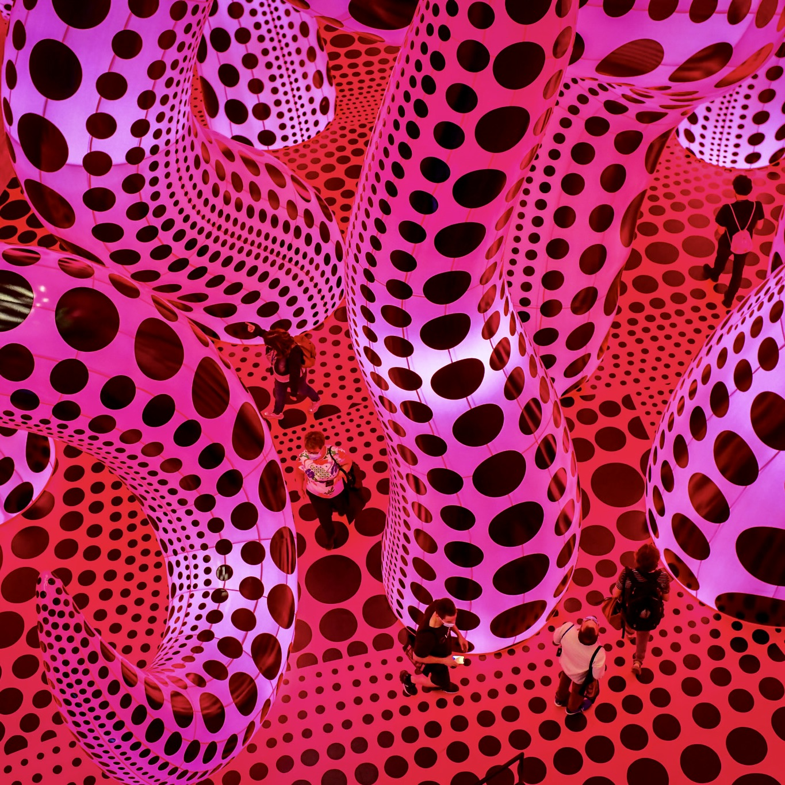
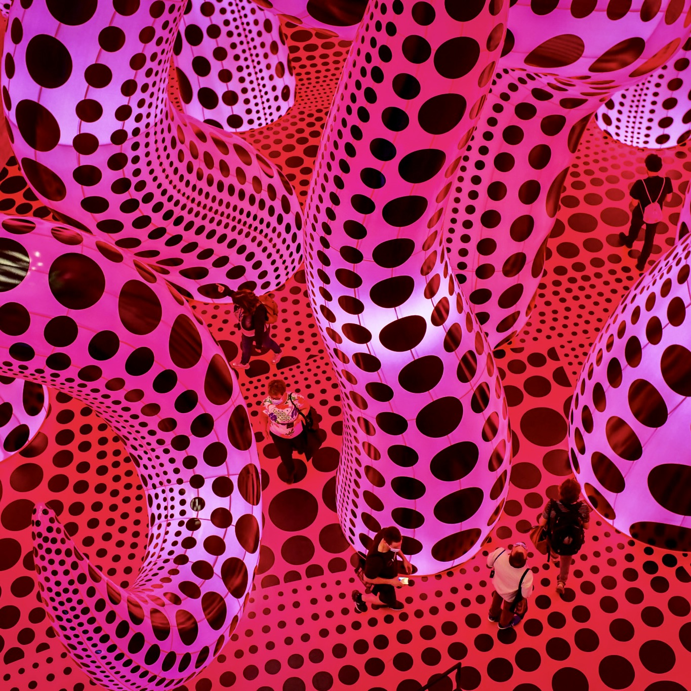

The circle has been known since before the beginning of recorded history. Natural circles are common, such as the full moon or a slice of round fruit. The circle is the basis for the wheel, which, with related inventions such as gears, makes much of modern machinery possible. In mathematics, the study of the circle has helped inspire the development of geometry, astronomy and calculus.
 
